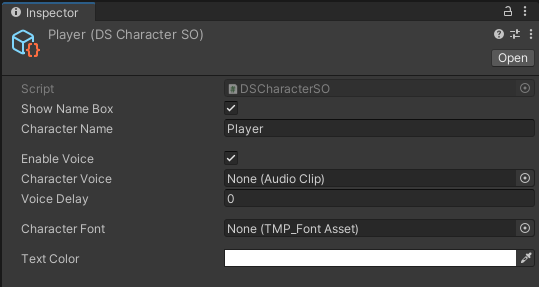
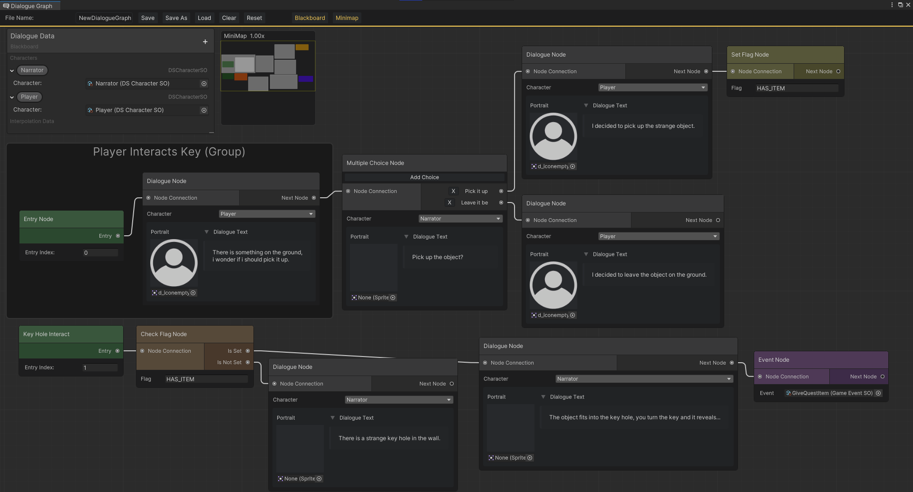
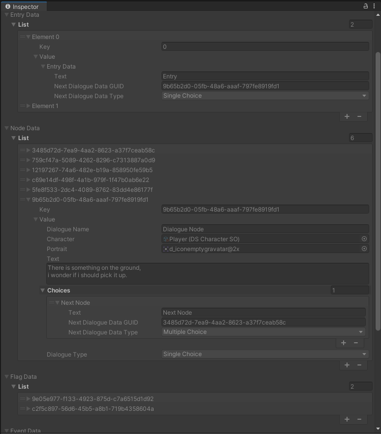

Dialogue Graph
Node based dialogue editor made using Unity's experimental GraphView API. This system allows quick and easy way to create complex scenarios with branching dialogue.
I started this project to learn how to implement custom editors with Unity and to create a solid dialogue system for my future projects since Unity does not offer one out of the box.
Characters
You can create character assets that hold character specific data which reduces the amount of references and values to assign every time you want to use certain settings for a character.

Graph Editor
The dialogue graph editor window is used for making dialogue by connecting different type of nodes together to create a network of nodes.

Blackboard
Holds data for dialogue specific characters and interpolation data (replacing tags with variables) which are used for dialogue creation.
Nodes
- Entry Node
- - Index based starting point for dialogue.
- Single Choice Node
- - Node that has text, portrait and character. This information gets shown to the player during runtime.
- Multiple Choice Node
- - Same as single choice but after the dialogue has been read, prompts player to make a choice with as many choices as you want.
- Flag Set Node
- - Saves a flag (string), that can be used for checking if player has done a certain action.
- Flag Check Node
- - Checks if a certain flag is set and continues to the next node depending if it was set or not.
- Event Node
- - Takes an event scriptable object which will raise an event for all listeners that have reference to the event given. This is used for making stuff happend during runtime.
- Group
- - Groups nodes, makes it easier to categorize massive amounts of nodes. This has no effect in runtime.
Runtime
Graphs made with the editor can be saved as scriptable objects that can be used during runtime to play back the dialogue.
